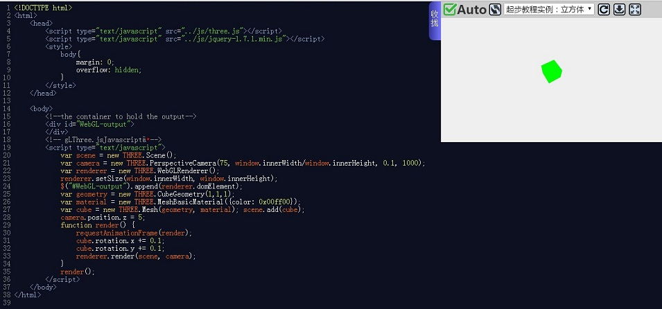
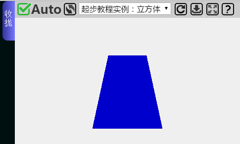
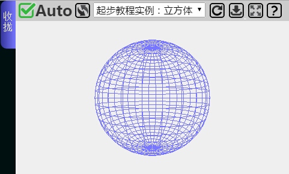

（1）创建第一个场景
（2）学会添加点、线、面以及3D物体
在本节学习前，请确保你已经有了可以使用的开发工具，支持WebGL的浏览器，如果还没有安装好，可以参见第一节的教程。如果你还没有准备好可以使用的服务器，还没有关系，因为在起步教程内还不回涉及到需要使用服务器才能运行的功能。
在本节教程，你将进入代码部分。为了能够掌握这些基础部分的内容，你需要亲自动手写代码，改代码。纯粹的看教程不会带来任何益处。为了更方便的边看教程边动手写代码，我提供了一个轻量级在线IDE，你可以在写代码的同时，看到代码运行的结果。
我们需要做的第一件事是创建一个空的HTML页面框架，我们可以用这个来作为所有实例的基础。页面框架如下所示：
<head>
<script type="text/javascript" src="../js/three.js"></script>
<script type="text/javascript" src="../js/jquery-1.7.1.min.js"></script>
<style>
body{
/* 设置margin为0和overflow为hidden，从而可以铺面整个页面*/
margin: 0;
overflow: hidden;
}
</style>
</head>
<body>
<!-- Div用来放置显示结果-->
<div id="WebGL-output">
</div>
<!-- 执行Three.js实例的Javascript代码-->
<script type="text/javascript">
// 当所有东西都加载完成后，我们运行Three.js元素.
$(function () {
// 我们在这边放Three.js元素
});
</script>
</body>
</html>
你可以看到，这个框架是个非常简单的HTML页面，只有几个元素。在<head>标签内，我们加载额外的用于实例的Javascript库。对于所有的实例，我们至少要加载两样东西：three.js 和jquery-1.7.1.min.js。在<head>标签内，我们也加入了几行CSS。当我们创建了铺满页面的场景时，这些样式会移除所有滚动条。在<body>标签内，你看到单独一个<div>元素，当我们写我们的Three.js代码时，我们指出将Three.js渲染器的输出都放到这个<div>内。在上面的代码片段中，你已经可以看到一点JavaScript。当整个页面被加载后，这一小段代码使用jQuery来调用一个匿名JavaScript函数。我们会把所有的Three.js代码放在这个匿名函数里。
如果我们在浏览器中查看此页面，结果并不十分令人震惊。正如你所期望的，你所看到的只是一个空白页。你可以将上面代码复制黏贴到在线IDE，在右侧的结果显示区是空白。
现在我们开始在框架内加入创建场景的代码，并且在场景中添加了一个旋转的正方体：
<head>
<script type="text/javascript" src="../js/three.js"></script>
<script type="text/javascript" src="../js/jquery-1.7.1.min.js"></script>
<style>
body{
/* 设置margin为0和overflow为hidden，从而可以铺面整个页面*/
margin: 0;
overflow: hidden;
}
</style>
</head>
<body>
<!-- Div用来放置显示结果-->
<div id="WebGL-output">
</div>
<!-- 执行Three.js实例的Javascript代码-->
<script type="text/javascript">
var scene = new THREE.Scene();
var camera = new THREE.PerspectiveCamera(75, window.innerWidth/window.innerHeight, 0.1, 1000);
var renderer = new THREE.WebGLRenderer();
renderer.setSize(window.innerWidth, window.innerHeight);
$("#WebGL-output").append(renderer.domElement);
var geometry = new THREE.CubeGeometry(1,1,1);
var material = new THREE.MeshBasicMaterial({color: 0x00ff00});
var cube = new THREE.Mesh(geometry, material); scene.add(cube);
camera.position.z = 5;
function render() {
requestAnimationFrame(render);
cube.rotation.x += 0.1;
cube.rotation.y += 0.1;
renderer.render(scene, camera);
}
render();
</script>
</body>
</html>
Three.js有3个重要的组件：场景（scene）、镜头（camera）和渲染器（renderer）。有了这三样东西，才能将物体渲染到网页中去。
var scene = new THREE.Scene();
上面那句代码创建了一个场景。所谓场景就是完整的3D世界，一切物体都在这个世界里面，它是一个承载万物的容器。
var camera = new THREE.PerspectiveCamera(75, window.innerWidth/window.innerHeight, 0.1, 1000);
以上那句代码创建了一个镜头（Camera）。你可以想象为镜头就是你的眼睛，镜头拍摄到的物体就是你看到的物体，镜头的方向就是你眼睛看的方向。就好比你在看一场电影，你看到的画面都是摄像机拍摄下来的场景。你会注意到这个镜头是PerspectiveCamera（透视相机），并且构造方法里面有一些参数。事实上，PerspectiveCamera有更多的参数，并且three.js提供了很多不同的镜头。这里不多介绍它的参数，后边会有专门的章节来介绍各种各样的镜头以及参数。
var renderer = new THREE.WebGLRenderer();
renderer.setSize(window.innerWidth, window.innerHeight);
上面2行代码创建了渲染器（Rander）并设置了必要参数。渲染器负责计算在浏览器中不同镜头角度所看到的场景会是怎样的。我们将在这个例子中创建一个WebGLRenderer对象，来使用你的显卡进行渲染场景。three.js有不同的渲染器，有一个基于canvas的渲染器，甚至有基于SVG的渲染器。虽然他们可以工作并且可以渲染简单的场景，但我不建议使用它们。它们是非常CPU密集型的，缺乏很多功能，如良好的材质支持和阴影效果，并且会让CPU非常劳累。
$("#WebGL-output").append(renderer.domElement);
上面那行代码将渲染器渲染后的输出结果放在一开始的<div>里面。你也可以不使用<div>元素来作为输出结果的容器，你可以使用html文档的body来作为容器。代码只需改成如下：
document.body.appendChild(renderer.domElement);//用body来作为输出结果的容器
var geometry = new THREE.CubeGeometry(1,1,1);
var material = new THREE.MeshBasicMaterial({color: 0x00ff00});
var cube = new THREE.Mesh(geometry, material);
scene.add(cube);
THREE.CubeGeometry是一个几何体。任何几何体本质都是若干个三角形拼凑而成，而三角形怎么拼成3D物体的，这并不需要我们关心。你只需要知道CubeGeometry是一个立方体。它的3个参数分别代表了x轴方向的宽度，y轴方向的高度，z轴方向的深度。
【注意：在three.js里面，长度单位是：米（就是国际单位那个米，meter）而不是像素。因为很明显，作为3D的世界，近大远小是生活规律，因此像素无法衡量物体大小或是距离长短，像素与长度没有直接的关联。】
上述的第一行就创建了一个边长为1米的正方体。第二行的代码是创建了一个材质，并由第三行代码把材质添加到正方体上。材质影响了物体表面的颜色，花纹之类的。这个材质就使得正方体是绿色的。不过材质有很多种，就和日常生活中类似，有木头的，纸质的，金属的，透明的……不同的材质效果是不同的。这边先不详细讨论不同材质的区别。你只需要知道现在这个立方体因为加入了绿色材质，就变成绿色的方块了。
function render() {
requestAnimationFrame(render);
cube.rotation.x += 0.1;
cube.rotation.y += 0.1;
renderer.render(scene, camera);
}
render();
上面的代码创建一个递归函数，但在这里我们把它叫做：渲染循环。
requestAnimationFrame(render);
这个函数保证了在每一次渲染完成后，将重新调用渲染函数进行渲染。在它下面的2行代码，使得绿色方块在每一次渲染前将它围绕自身的x轴和y轴旋转0.1弧度。由于是+，所以是顺时针，改成减号就是逆时针。
renderer.render(scene, camera);
然后调用渲染器的render方法，将镜头从场景内拍摄到的图像渲染出来。
你会发现使用Three.js来创建3D场景是非常容易的事。如果你已经明白上述实例中代码的意思，那么下面将很容易知道如何添加点，线，平面还有球体。它们的创建方式基本是一致的。
点的创建很容易，点只是一个坐标(x,y,z)。在Three.js中，点就是一个三维向量来表示：
THREE.Vector3 = function ( x, y, z ) {
this.x = x || 0;
this.y = y || 0;
this.z = z || 0;
};
Vector3是定义在THREE下面的一个类。以后要用Vector3，需要加THREE前缀，为了防止和其他库或自己写的类重名。上述代码是初始化一个三维向量的函数，并且设置了默认值为0。
两个不重合的点确定了一条直线。我们可以定义两个点来画出一条线段：
<!DOCTYPE html>
<html>
<head>
<script type="text/javascript" src="../js/three.js"></script>
<script type="text/javascript" src="../js/jquery-1.7.1.min.js"></script>
<style>
body{
margin: 0;
overflow: hidden;
}
</style>
</head>
<body>
<!--the container to hold the output-->
<div id="WebGL-output">
</div>
<!-- gLThree.jsJavascriptã-->
<script type="text/javascript">
var scene = new THREE.Scene();
var camera = new THREE.PerspectiveCamera(75, window.innerWidth/window.innerHeight, 0.1, 1000);
var renderer = new THREE.WebGLRenderer();
renderer.setSize(window.innerWidth, window.innerHeight);
$("#WebGL-output").append(renderer.domElement);
//创建几何体
var geometry = new THREE.Geometry();
//创建线条的材质并定义两种颜色
var material = new THREE.LineBasicMaterial( { vertexColors: true } ,5);
var color1 = new THREE.Color( 0x0000ff ), color2 = new THREE.Color( 0xff0000 );
//线的颜色可以由2点的颜色决定
var p1 = new THREE.Vector3( -2, 0, -2 );
var p2 = new THREE.Vector3( 2, 0, 2 );
//将点加到几何体的顶点集合内
geometry.vertices.push(p1);
geometry.vertices.push(p2);
//为几何体上色
geometry.colors.push( color1, color2 );
//定义一条线段，并添加到场景里
var line = new THREE.Line( geometry, material, THREE.LinePieces );
scene.add(line);
camera.position.z = 5;
renderer.render(scene, camera);
</script>
</body>
</html>
我们只是简单的修改了第一个实例，你可以看到一根从蓝色到红色渐变的线段。添加线段和添加绿色方块的方式一样，都是通过：（1）建立一个几何体-->（2）创建一种材质-->（3）将材质和几何体结合变成Three.js的一个物体-->（4）将物体放到场景内。同理，添加平面，球体的步奏是相同的。我不再将完整的代码贴出来，只是给出平面和球体的创建方式所需要的代码。你可以使用编辑器来修改代码，看看运行结果是否和你预期的一样。
var planeGeometry = new THREE.PlaneGeometry(3,5, 1, 1);
var planeMaterial = new THREE.MeshBasicMaterial({
color: 0x0000cc
});
var plane = new THREE.Mesh(planeGeometry, planeMaterial);
plane.rotation.x = -0.2 * Math.PI;
plane.position.x = 0;
plane.position.y = 0;
plane.position.z = 0;
scene.add(plane);
上述代码创建了一个蓝色的平面，为了让它看起来更有立体感，我将它绕x轴旋转了0.2弧度。效果如下所示：
球体的创建也一样简单
var sphereGeometry = new THREE.SphereGeometry(30, 30, 30);
var sphereMaterial = new THREE.MeshBasicMaterial({
color: 0x7777ff,
wireframe: true//注意这个地方增加了这个属性设置
});
var sphere = new THREE.Mesh(sphereGeometry, sphereMaterial);
sphere.position.x = 0;
sphere.position.y = 0;
sphere.position.z = 0;
scene.add(sphere);
为了不单调，我在材质的json字段里增加了：wireframe: true。这条设置使得渲染器在渲染该物体时，只显示出它的骨骼，也就是由一大堆多边形组成的外壳模型。由于这个物体的直径设成了30，所以我们为了看清整个球体，我们把镜头拉远，不妨可以设置：camera.position.z = 60;，这样你就可以清楚的看到整个球体：
本节教程到这里结束了。你需要自己动手写一下简单的实例来巩固所学内容。